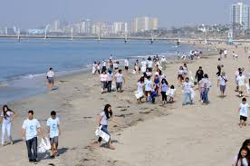
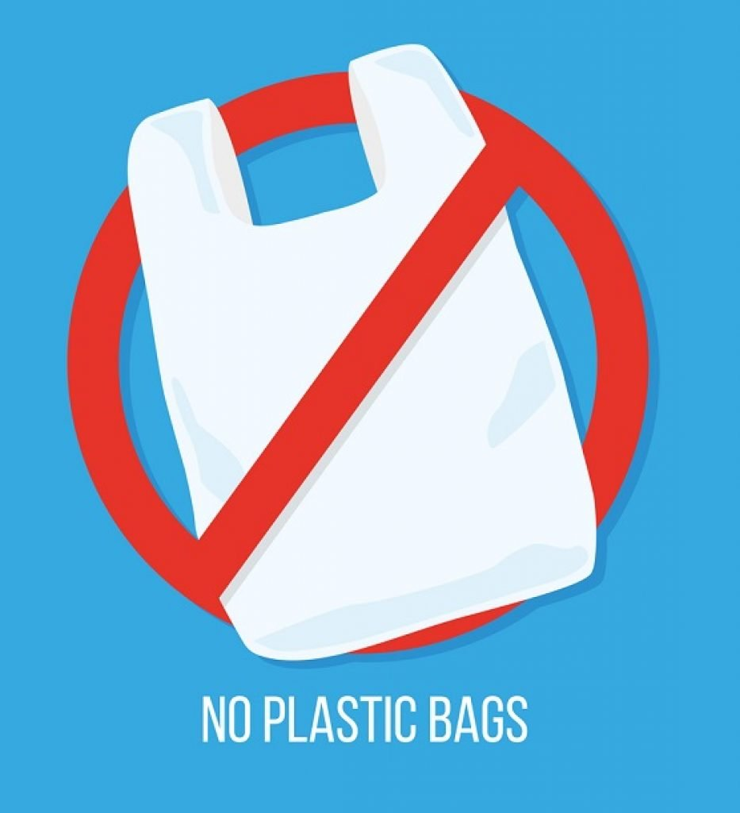

How Can You Be Really Helpful Against This Major Threat?
There are many ways you can show support to not just ocean pollution near California and Hawaii at the Great Pacific Garbage Patch, but you can also show support by volunteering in daily activities that will make the major water bodies be more healthy. This also means that the species you see in your nearby beach/lake/pond can also be healthy and won't have to face the threat of being wiped out of that habitat. The easiest one to take a part in or volunteer is a simple beach cleanup near where you live. This helps reduce the amounts of plastic that ends up in the ocean and you can increase the capability and chances of reaching that goal of banning trash to re-enter or just enter the ocean for the first time. Another simple one is aiming to choose less plastic packaging, so there can be a chance of less amounts ending up in the ocean every year. It would be really helpful when even one human being makes a difference, even if it may cost you a bit more money. You would be setting the right example for the planet and perhaps encourage more people to do the same.
 
This goes along with the next way of being helpful: spreading the awareness about how much plastic is ending up in the ocean to people like your friends and family. This is a huge way of spreading the message because family and friends are the people who trust you the most, so it will spread other people as well once the people you told actually realize that everything you said was correct. Another important way is to make sure you always recycle anything that uses plastic like plastic produce bags or if there is no recyvle bin near you, make sure it at least goes into the trash. A lot of people think the lot of the stuff they throw out of car windows or in the streets will eventually decompose, but little do they know that it may actually take tens of thousands of years (especially for plastic products and material). The final way that is just as important as the other methods is to give local or even online environmental organisations that make an effort to use less plastic a positive feedback. This will make the organisations more motivated to work as hard as possible to voice out these undeniable facts to the public. They may also be more inclined to push their suppliers for items with less plastic packaging, which will always be really helpful because they can also request the same for other organizations.